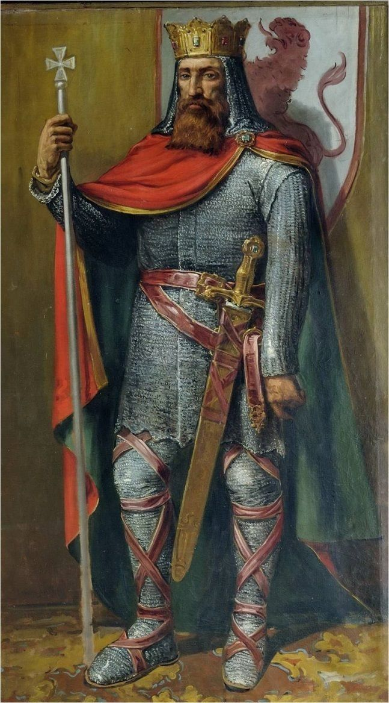

В средние века в Испании были разные типы поселений: одни принадлежали феодалам, другие — церкви, а самые особенные — непосредственно королю.
Овьедо был таким особенным городом. По решению короля Альфонсо IX, вокруг города в XIII веке была построена
стена. Она служила не только защитой, но и символом особого статуса Овьедо как города короля.

У города были особые права: автономия в управлении, собственные суды, льготы для торговли и поселения, а также
защита самого монарха.
Со временем город рос, стена стала мешать и ее снесли, но некоторые ее части до сих пор стоят и украшают город.